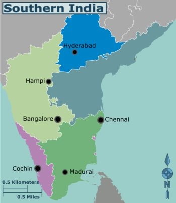

South India is the area including the five southern Indian states of Andhra Pradesh, Karnataka, Kerala, Tamil Nadu and Telangana, as well as the three 08/14/2019union territories of Andaman and Nicobar islands, Lakshadweep and Puducherry, occupying 19% of India's area (635,780 km2 or 245,480 sq mi). Covering the southern part of the peninsular Deccan Plateau, South India is bounded by the Bay of Bengal in the east, the Arabian Sea in the west and the Indian Ocean in the south. The geography of the region is diverse with two mountain ranges–the Western and Eastern Ghats, bordering the plateau heartland. Godavari, Krishna, Kaveri, Tungabhadra, Periyar and Vaigai rivers are important non-perennial sources of water. Chennai, Bangalore, Hyderabad, Coimbatore, Kochi, Trivandrum, Visakhapatnam, Madurai, Mysore, Mangalore and Kozhikode are the largest urban areas. The majority of the people in South India speak one of the four major Dravidian languages: Telugu, Tamil, Kannada and Malayalam. During its history, a number of dynastic kingdoms ruled over parts of South India whose invasions across southern and southeastern Asia impacted the history and culture in those regions. Major dynasties that were established in South India include the Cheras, Cholas, Pandyas, Pallavas, Satavahanas, Chalukyas, Rashtrakutas and Vijayanagara. Some Western European countries established ports in the region by military coercion in the 18th and 19th centuries. After experiencing fluctuations in the decades immediately after Indian independence, the economies of South Indian states have registered higher than national average growth over the past three decades. While South Indian states have improved in some socio-economic metrics, poverty continues to affect the region much like the rest of the country, although it has considerably decreased over the years. HDI in the southern states is high and the economy has undergone growth at a faster rate than most northern states. Literacy rates in the southern states are higher than the national average with approximately 80% of the population capable of reading and writing. The fertility rate in South India is 1.9, the lowest of all regions in India. click on map to enlarge. south india quora link
